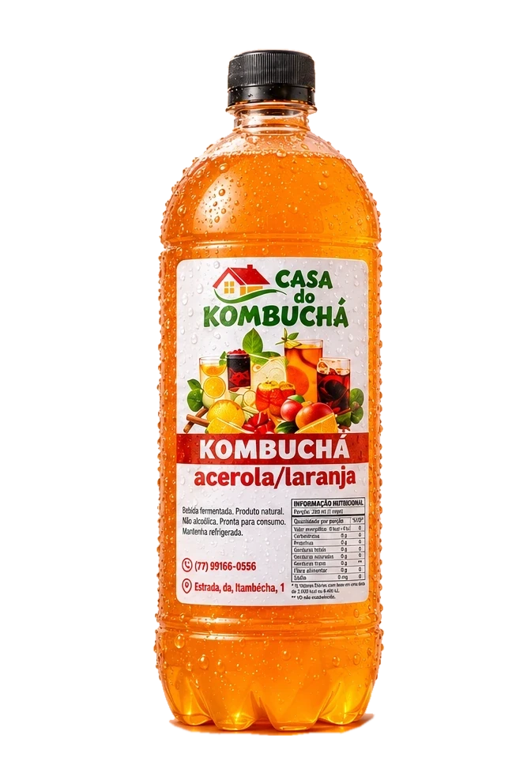
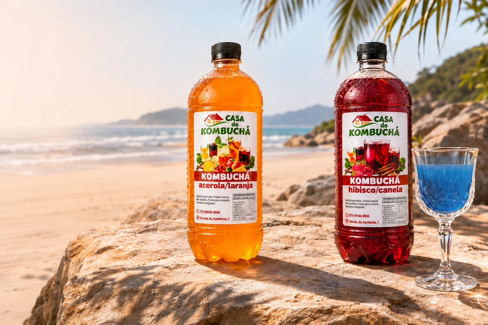
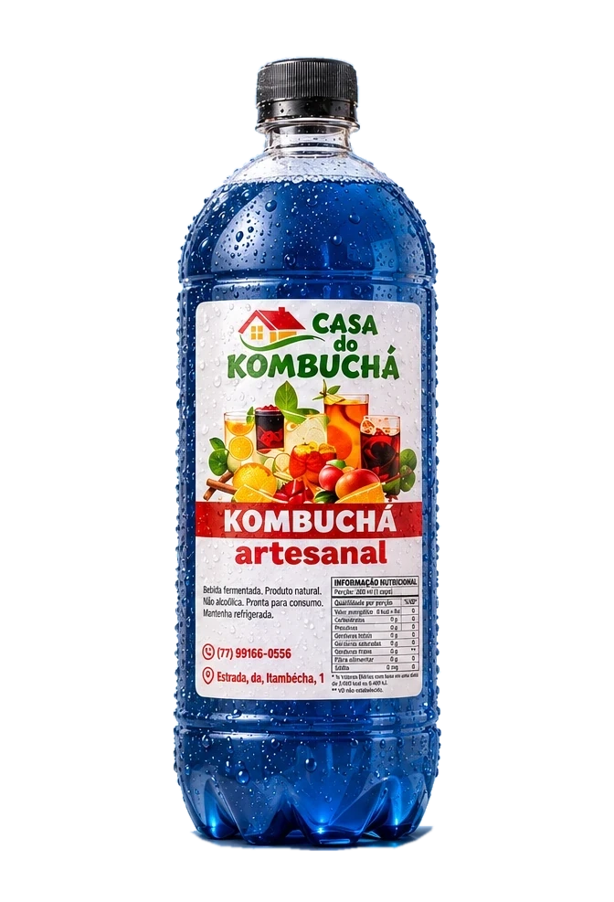
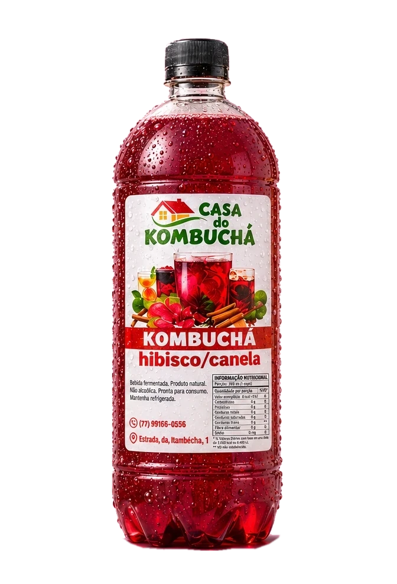
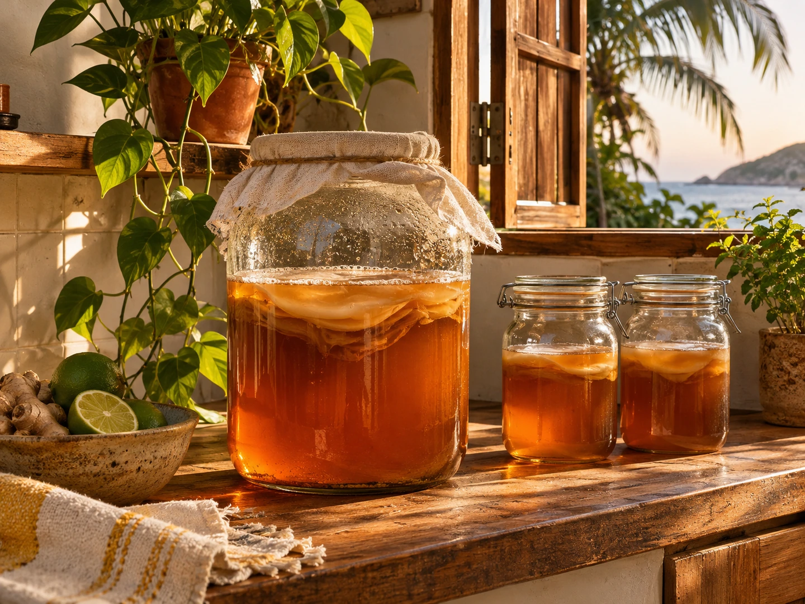

Kombuchá artesanal
Da nossa casa
pra sua taça.
Chá fermentado, borbulhas naturais e 21 sabores. Feito com cuidado e entregue direto do produtor.
Garrafa de 1,5 L · A partir de R$ 25
Entregamos de: FLORIANÓPOLIS A CURITIBA
Fermentação natural✳21 sabores artesanais✳Entrega direto do produtor✳
Produtos
Qual vai pra sua taça?
Conheça nossos sabores em destaque. Todas as garrafas têm 1,5 L.


Por que a kombuchá?
O chá vira borbulha.
A base da nossa kombuchá é chá verde e água filtrada. A fermentação transforma o chá em uma bebida refrescante, com gás natural.
- Fermentação viva
- As borbulhas nascem durante o processo artesanal.
- Sabor de verdade
- Sem concentrados, essências ou corantes.
- Direto de quem faz
- Você conversa com a Casa para escolher e receber seu pedido.
Depoimentos
“Produto sensacional, todos os sabores são ótimos. Recomendo muito!”
“Conheci por uma amiga e me apaixonei. Gás na medida certa, sem estufar e com um sabor incrível.”
“Tem pra todos os gostos! Mais ou menos cítricos, todos com a mesma qualidade. Com certeza comprarei novamente.”
Sobre a Casa
A primeira garrafa nasceu na cozinha de casa.
O que começou como um experimento virou uma paixão. Hoje, a Casa do Kombuchá segue produzindo artesanalmente e levando cada pedido direto até você.

Contato
Bora encher a taça?
A saúde que se bebe chega em sua residência no máximo em até 36 horas.
FALE CONOSCODúvidas frequentes
Quanto custa?
A partir de R$ 25 por garrafa de 1,5 L. O valor varia conforme a cidade.
Qual é o pedido mínimo?
O pedido mínimo é de 3 garrafas. Também temos combos de 6 garrafas de 1,5 L.
Onde vocês entregam?
Atendemos o corredor entre Florianópolis e Curitiba, especialmente o litoral norte catarinense. Consulte o prazo e a entrega para o seu endereço pelo WhatsApp.
Como armazeno a kombuchá?
Mantenha na geladeira e siga as orientações do rótulo.